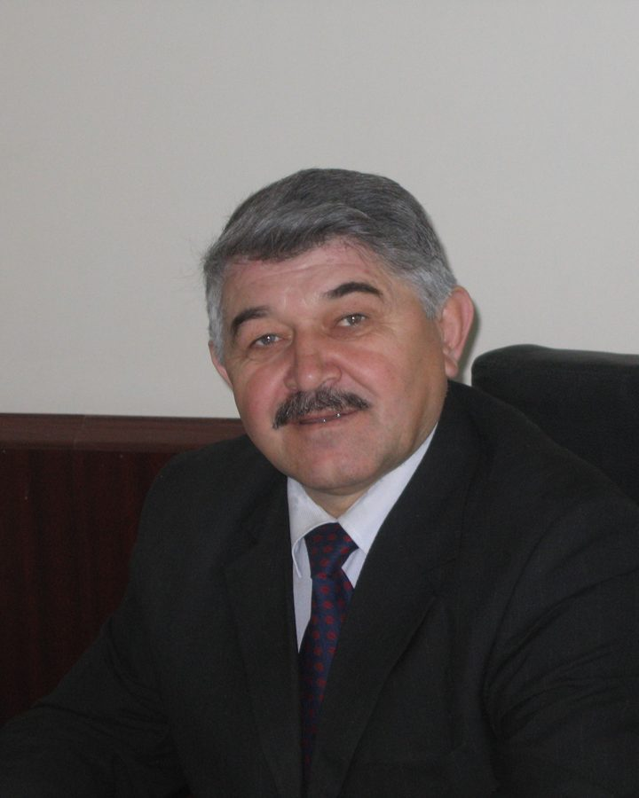

Народный писатель Дагестана
Абдуселим Исмаилов
Лезгинский поэт, прозаик и драматург. Стихи, повести, рассказы и пьесы на родном языке и в переводе на русский.

«Детство — это конь под седлом, всегда готовый к твоим услугам. Держись за свое детство».
Из повести «Мой белый конь»
Биография
Заслуженный деятель искусств и народный писатель Республики Дагестан.
Абдуселим Абумислимович Исмаилов — дагестанский поэт, прозаик и драматург, лезгин по национальности. Родился 16 декабря 1947 года в селе Келе Магарамкентского района Дагестана. Окончил филологический факультет Дагестанского государственного университета.
Работал учителем в школе, редактором Дагестанского радио, заведовал отделом республиканской газеты «Коммунист», был редактором литературного журнала «Самур» и заместителем главного редактора журналов «Соколёнок» и «Литературный Дагестан». Член Союза писателей России.
Пишет на лезгинском языке. Его проза в переводе на русский вошла в альманахи «Лира Кавказа», «Голос Кавказа» и «Дагестан литературный», публикуется в журнале «Дагестан». Стихи, поэмы, рассказы и повести переведены на языки народов Дагестана и включены в программы школ и вузов, где изучается литература на языках Дагестана.
Автор более двадцати поэтических и прозаических книг на родном и русском языках и восьми пьес, поставленных на сцене национального театра.
- 194716 декабря родился в селе Келе Магарамкентского района.
- 1979Участник VII Всесоюзного совещания молодых писателей. На семинаре Агнии Барто рекомендован в Союз писателей СССР.
- 1981Детские стихи в сборниках «Какое хорошее утро» и «Апрельский дождь» («Малыш», «Детская литература», 1981 и 1986).
- 1985В издательстве «Малыш» вышла книжка стихов «Большой человек».
- 1990Лезгинский театр поставил пьесу-сказку «Чигали». Позже шли «КӀвал хъиткьинна» и «Дустагъда мехъер» (1994), «Къарачияр» (2001).
- 2006Проза в московских сборниках северокавказских писателей «Война длиною в жизнь» (2006) и «Дорога домой» (2011).
- 2008Рассказ «Гведек» включён в антологию современной литературы народов России.
- 2013Вышла книга повестей и рассказов «Ночь перед новолунием» в переводе с лезгинского.
Книги
Сборники стихов, поэм, повестей и рассказов. Откройте книгу, чтобы прочитать начало и посмотреть, что в неё входит.
- А. ИсмаиловВещий сонНа русскомВещий сонПовести и рассказы. Перевод с лезгинского
- А. ИсмаиловВо веки вековНа русскомВо веки вековРассказы, новеллы и публицистика
- А. ИсмаиловЛасточкин домНа русскомЛасточкин домКнига для детей: стихи, сказки, поэма «Дедушкин май»
- А. ИсмаиловЭверзава Эмина зазНа лезгинскомЭверзава Эмина зазШиирар, поэмаяр, драма · Махачкала, 2009
- А. ИсмаиловВахтарин кьуьлНа лезгинскомВахтарин кьуьлШиирар ва поэмаяр
- А. ИсмаиловТерг хьайибурНа лезгинскомТерг хьайибурРассказар, гьикаяяр, повестар ва пьесаяр
- А. ИсмаиловСто признаний в любвиНа лезгинскомСто признаний в любвиСтихи о любви
- А. ИсмаиловСамурдин лепеярЛезгинский и русскийСамурдин лепеяр«Волны Самура». Песни и стихи для детей
Повести и рассказы
Проза в переводе на русский язык.
- Проделки шайтанаПовесть об оскорбленном духе и о времени, сошедшем с ума · около 127 стр.
- Вещий сонПовесть · около 57 стр.
- Мой белый коньПовесть · около 49 стр.
- Последний войПовесть · около 41 стр.
- Тревожные беседыПовесть · около 52 стр.
- ГведекРассказ · около 7 стр.
- Мост АмаханаРассказ · около 6 стр.
- Свадьба каратистаРассказ · около 18 стр.
- Шелковица старухи ЗалмуРассказ · около 6 стр.
- Легенда о Говорящем камне и шахе АлбурзеЛегенда · около 6 стр.
- Кучи камней. Кровь жеребца. УбийцаРассказы · около 21 стр.
- МгновенияКороткие новеллы · около 17 стр.
Пьесы
Драмы и сказки, поставленные на сцене национального театра.
- ЧигалиСказка в двух действиях. Перевод с лезгинского · около 17 стр.
- Мамрачрин багъда йифлезг.Драма о поэте Етиме Эмине · около 41 стр.
- Пуд югълезг.Драма в двух частях · около 34 стр.
- КӀири бубалезг.Драма · около 47 стр.
- Къарачиярлезг.Драма · около 21 стр.
- Дустагъда мехъерлезг.Пьеса · около 24 стр.
- КӀвал хъиткьинналезг.Пьеса · около 31 стр.